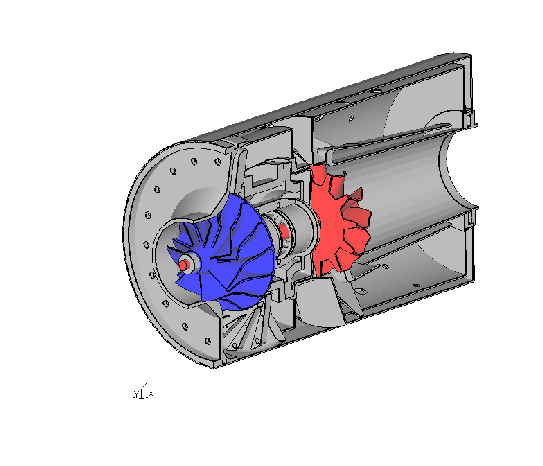

Next:
Contents
Contents
CalculiX USER'S MANUAL
- CalculiX GraphiX, Version 2.23 -
Klaus Wittig
Figure 1:
A complex model made from scratch using second order brick elements

Contents
Introduction
Concept
File Formats
Getting Started
Program Parameters
Input Devices
Mouse
Keyboard
Menu
Datasets
Entity
Viewing
Show Elements With Light
Show Bad Elements
Fill
Lines
Dots
Flip shell elements
Toggle Culling Back/Front
Toggle Illuminate Backface
Toggle Model Edges
Toggle Element Edges
Toggle Surfaces/Volumes
Toggle Move-Z/Zoom
Toggle Background Color
Toggle Vector-Plot
Toggle Add-Displacement
Toggle Shaded Result
Toggle Transparency
Toggle Ruler
Colormap
Animate
Start
Tune-Value
Steps per Period
Time per Period
Toggle Real Displacements
Toggle Static Model Edges
Toggle Static Element Edges
Toggle Dataset Sequence
Frame
Zoom
Center
Enquire
Cut
Graph
User
Orientation
+x View
-x View
+y View
-y View
+z View
-z View
Hardcopy
Tga-Hardcopy
Ps-Hardcopy
Gif-Hardcopy
Png-Hardcopy
Start Recording Gif-Movie
Help
Toggle CommandLine
Quit
Customization
Commands
anim
area
asgn
aver
bia
body
break
call
capt
cmap
cntr
col
comp
cont
copy
corrad
csysa
cut
del
dist
div
ds
elem
else
else if
elty
endif
endwhile
enq
eprop
eqal
exit
fil
flip
flpc
font
frame
gbod
gonly
graph
grpa
grps
gsur
gtol
hcpy
help
if
int
init
lcmb
length
line
lnor
mata
map
mats
max
maxc
maxr
menu
merg
mesh
mids
min
minc
minr
minus
mm
move
movi
msg
mshp
neigh
node
norm
nurl
nurs
ori
plot
plus
pnt
prnt
proj
qadd
qali
qbia
qbod
qcnt
qcut
qdel
qdis
qdiv
qenq
qfil
qflp
qint
qlin
qmov
qmsh
qnor
qpnt
qnod
qrem
qseq
qshp
qspl
qsur
qtxt
quit
read
rep
rnam
rot
save
scal
send
seqa
seqc
seql
seta
setc
sete
seti
setl
seto
setr
shpe
split
stack
steps
stop
subm
surf
swep
sys
test
thrs
tra
trfm
txt
typs
ucut
ulin
val
valu
view
volu
while
wpos
wsize
zap
zoom
Element Types
Result Format
Model Header Record
User Header Record
Nodal Point Coordinate Block
Element Definition Block
Parameter Header Record
Nodal Results Block
Pre-defined Calculations
Von Mises Equivalent Stress
Signed Von Mises Equivalent Stress
Von Mises Equivalent Strain
Signed Von Mises Equivalent Strain
Principal Stresses
Principal Strains
maxShear Stresses
Contact Stresses
Contact Strain
Cylindrical Stresses
Weighted Error
Meshing rules
User-Functions
Internal Setnames
Known Problems
Program does not show the geometry after startup
Program is not responding
Program generates a segmentation fault
Tips and Hints
How to change the format of the movie file
How to get the sets from a geo- or ccx-inp file for post-processing
How to define a set of entities
How to enquire node numbers and values at certain locations
How to select only nodes on the surface
How to write values to a file
How to generate a user dataset
How to generate a time-history plot
How the mesh is related to the geometry
How to change the order of elements
How to connect independent meshes
How to define loads and constraints
How to map loads
How to run cgx in batch mode
How to process results
How to deal with CAD-geometry
How to check an input file for ccx
Remarks Concerning Ansys
Remarks Concerning Code Aster
Remarks Concerning dolfyn
Remarks Concerning Duns and Isaac
Remarks Concerning ls-dyna
Remarks Concerning Nastran
Remarks Concerning NETGEN
Remarks Concerning OpenFOAM
Remarks Concerning Samcef
Simple Examples
Disc
Cylinder
Sphere
Sphere (Volume)
Sphere (Thin Volume)
Airfoil for cfd codes
If and while demo
Data storage in a user dataset
User File Parser
Bibliography
About this document ...